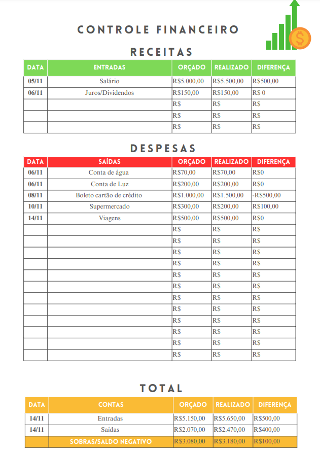

PROJETO DE EXTENSÃO
CONTABILIDADE FINANCEIRA

Ao conhecer sobre a sua renda e seus gastos, você sabe o que pode ser melhorado para sobrar mais dinheiro no fim do mês. Por isso, trouxemos dois tipos de planilhas, simples e eficazes para controle pessoal, uma para impressão e uma para uso online (Excel).
Baixar Planilha Impressa Baixar Planilha do Excel
DAD- Departamento de Administração e Contabilidade.
Isabella Melo, Isaías Silva, Laís Badaró, Thiago Salatiel, Sarah Batista e Sarah Ellen.